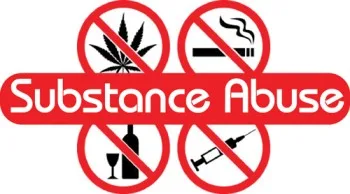
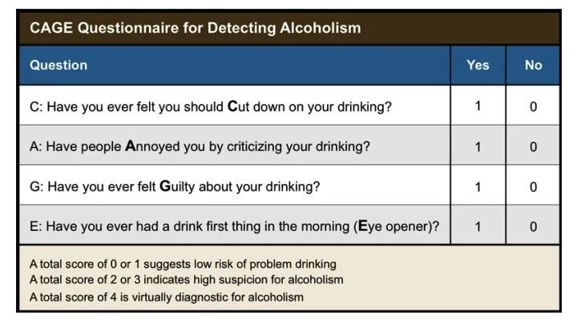

Expanded Nursing Uganda Explanation
Substance/alcohol abuse should be understood beyond a short definition. Link the concept to patient history, focused assessment, common risks, nursing priorities, documentation and evaluation of outcomes.
Contents, 44 sections (tap to expand)
01 Overview
Before we define SUD, lets first understand key terms. The Diagnostic and Statistical Manual of Mental Disorders, Fifth Edition (DSM-5), provides the standardized criteria used by clinicians.
02 I. Key Terms and Definitions
- Substance: Any natural or synthesized chemical that, when taken into the body, alters its functioning. This includes psychoactive substances like alcohol, illicit drugs, prescription medications used non-medically, and even substances like caffeine and nicotine.
- Substance Use: The consumption of a substance. This is a broad term that can range from experimental or recreational use (e.g., having a glass of wine with dinner) to problematic use. Not all substance use is problematic or constitutes a disorder.
- Substance Intoxication: A reversible syndrome of symptoms resulting from the recent ingestion of a substance. These symptoms are specific to the substance and manifest as clinically significant problematic behavioral or psychological changes (e.g., belligerence, mood lability, impaired cognition) that developed during or shortly after substance ingestion. Example: Acute alcohol intoxication leading to slurred speech, unsteady gait, and impaired judgment.
- Substance Withdrawal: A syndrome that develops shortly after the cessation of (or reduction in) prolonged, heavy substance use. The symptoms are specific to the substance and cause clinically significant distress or impairment in social, occupational, or other important areas of functioning. Example: Alcohol withdrawal characterized by tremors, sweating, anxiety, and potentially seizures or delirium tremens.
- Tolerance: A need for markedly increased amounts of the substance to achieve intoxication or desired effect, OR a markedly diminished effect with continued use of the same amount of the substance. This is a physiological adaptation.
- Craving: An intense desire or urge for the substance. This is a psychological component, often a powerful driver of continued use and relapse.
- Substance dependence: Refers to a compulsive use and continuous relying on a specific substance for both physical and psychological relief with an inability to stop its usage even after significant problems in everyday functioning have developed.
- Tolerance: Refers to a need for increased amounts of a substance to attain the desired effect.
03 Substance Use Disorder (SUD) - According to DSM-5
The DSM-5 no longer separates "substance abuse" and "substance dependence" into distinct diagnoses. Instead, it combines them into a single diagnostic category: Substance Use Disorder (SUD) , which is measured on a continuum from mild to severe.
A Substance Use Disorder is characterized by a problematic pattern of substance use leading to clinically significant impairment or distress . It is diagnosed by the presence of at least two of the following 11 criteria occurring within a 12-month period:
04 Impaired Control (Criteria 1-4):
- Taken in larger amounts or over a longer period than was intended: The individual uses more of the substance or for a longer duration than they initially planned.
- Persistent desire or unsuccessful efforts to cut down or control use: The individual wants to reduce or stop use but struggles to do so.
- A great deal of time is spent in activities necessary to obtain the substance, use the substance, or recover from its effects: The individual's life revolves around the substance.
- Craving, or a strong desire or urge to use the substance: The individual experiences intense urges.
05 Social Impairment (Criteria 5-7):
- Recurrent substance use resulting in a failure to fulfill major role obligations at work, school, or home: Use interferes with responsibilities (e.g., missing work, neglecting children).
- Continued substance use despite having persistent or recurrent social or interpersonal problems caused or exacerbated by the effects of the substance: Use continues even when it's damaging relationships.
- Important social, occupational, or recreational activities are given up or reduced because of substance use: Activities once enjoyed are replaced by substance-seeking/using.
06 Risky Use (Criteria 8-9):
- Recurrent substance use in situations in which it is physically hazardous: Using in dangerous situations (e.g., driving under the influence, using needles unsafely).
- Continued substance use despite knowledge of having a persistent or recurrent physical or psychological problem that is likely to have been caused or exacerbated by the substance: The individual knows the substance is harming their health but continues to use.
07 Pharmacological Criteria (Criteria 10-11):
- Tolerance: (As defined above) Need for increased amounts to achieve effect, or diminished effect with continued use of the same amount. Note: This criterion is not met for some substances if used medically under appropriate supervision.
- Withdrawal: (As defined above) Characteristic withdrawal syndrome when substance use is reduced or stopped, or the substance is taken to relieve or avoid withdrawal symptoms. Note: This criterion is not met for some substances if used medically under appropriate supervision.
08 III. Severity Specifiers
Based on the number of criteria met, SUDs are specified by severity:
- Mild SUD: 2-3 criteria met
- Moderate SUD: 4-5 criteria met
- Severe SUD: 6 or more criteria met
09 IV. Differentiating from Past Terminology
- "Substance Abuse" (DSM-IV): Implied a pattern of use leading to negative consequences but without physiological dependence. This term is largely replaced by the broader SUD diagnosis.
- "Substance Dependence" (DSM-IV): Implied a compulsive pattern of use with physiological symptoms like tolerance and withdrawal. This is now encompassed within the severe end of the SUD spectrum.
10 Epidemiology and Prevalence of SUDs
SUDs are a major public health concern globally. They affect millions of people of all ages, socioeconomic statuses, and background. In a typical year, millions of Americans (aged 12 or older) report having an SUD in the past year. This includes significant numbers for alcohol use disorder, illicit drug use disorder, and prescription drug misuse.
- Alcohol Use Disorder (AUD): Often the most prevalent SUD.
- Illicit Drug Use Disorder: Includes cannabis, cocaine, heroin, hallucinogens, inhalants, methamphetamine, and misuse of prescription medications (pain relievers, tranquilizers, stimulants, sedatives). Opioid use disorder (including heroin and prescription pain relievers) remains a significant crisis.
- Co-occurrence with Mental Illness: There is a very high rate of co-occurrence between SUDs and other mental health disorders (often referred to as "dual diagnosis" or "co-occurring disorders"). More than half of individuals with an SUD also have a mental illness, and vice-versa. This complicates treatment and often leads to poorer outcomes if not addressed integratively.
11 Etiology and Risk Factors for SUDs
Addiction is not a moral failing but a disease with identifiable risk factors that increase an individual's vulnerability. These factors can be broadly categorized:
12 1. Genetic/Biological Factors:
- Family History: Genetics account for 40-60% of an individual's vulnerability to SUDs. Having a first-degree relative with an SUD significantly increases risk.
- Genetic Predisposition: Specific genes may influence how a person responds to substances (e.g., how they metabolize alcohol, the sensitivity of their reward pathways).
- Neurobiological Vulnerability: Differences in brain structure and function, particularly in areas related to impulse control, stress response, and reward processing, can increase risk.
13 2. Psychological Factors:
- Mental Health Disorders: Pre-existing mental illnesses (e.g., depression, anxiety disorders, PTSD, ADHD, bipolar disorder, schizophrenia) significantly increase the risk of developing an SUD. Individuals may use substances to self-medicate distressing symptoms.
- Trauma: A history of trauma (e.g., childhood abuse, neglect, combat exposure, sexual assault) is a major risk factor. Trauma can alter brain chemistry and increase vulnerability to both mental health disorders and SUDs.
- Personality Traits: Traits such as impulsivity, sensation-seeking, poor self-regulation, low self-esteem, and difficulty coping with stress can contribute to increased risk.
- Coping Deficits: Lack of healthy coping mechanisms to manage stress, emotions, or life challenges can lead individuals to turn to substances.
14 3. Social/Environmental Factors:
- Early Exposure: Early initiation of substance use (especially during adolescence when the brain is still developing) is a strong predictor of later SUD.
- Peer Pressure/Social Networks: Association with peers who use substances significantly increases the likelihood of an individual using and developing an SUD.
- Family Environment: Parental substance use, lack of parental supervision, family conflict, weak family bonds, and inconsistent discipline are risk factors.
- Socioeconomic Status: Poverty, unemployment, homelessness, and lack of educational opportunities are associated with higher rates of SUDs.
- Culture and Community Norms: Cultural attitudes toward substance use, availability of substances, and community-level stressors (e.g., discrimination, violence) play a role.
- Stress: Chronic stress from various sources (work, relationships, financial) can increase vulnerability.
15 Theories Behind the Development of Addiction
Addiction is generally understood through a biopsychosocial model, integrating various theoretical perspectives:
16 1. Neurobiological Theories (Disease Model):
- Reward Pathway Dysregulation: Substances flood the brain's reward system (mesolimbic dopamine pathway) with dopamine, producing intense pleasure. With repeated use, the brain adapts, reducing its natural dopamine production and making natural rewards less pleasurable. This leads to a need for more of the substance to achieve the same effect (tolerance) and a powerful drive to seek the substance.
- Brain Changes: Chronic substance use causes long-lasting changes in brain structure and function in areas controlling executive function (prefrontal cortex), judgment, decision-making, memory, learning, and behavioral control. These changes contribute to compulsive drug-seeking behavior and impaired impulse control despite negative consequences.
- Genetics: Genetic predispositions influence the brain's vulnerability to these changes.
17 2. Psychological Theories:
- Learning Theory (Conditioning): Substance use becomes a learned behavior. Positive reinforcement (euphoria, reduced anxiety) drives initial use. Negative reinforcement (relief from withdrawal or distress) maintains use. Cues associated with substance use (people, places, objects) become conditioned stimuli that trigger craving and relapse.
- Cognitive Theory: Focuses on thoughts and beliefs. Individuals may develop cognitive distortions (e.g., "I can only relax with alcohol," "I need drugs to be creative"). Expectations about substance effects and self-efficacy (belief in one's ability to cope) also play a role.
- Psychodynamic Theory: Views substance use as a defense mechanism or a way to cope with underlying psychological conflicts, unresolved trauma, or emotional pain.
18 3. Sociocultural Theories:
- Social Learning: Individuals learn substance use behaviors and attitudes from observing others (family, peers, media).
- Cultural Influences: Societal norms, cultural traditions, and legal/policy environments shape access and attitudes toward substance use.
- Social Disintegration: Factors like poverty, lack of social support, and community disorganization can contribute to higher rates of SUDs.
19 Common Substances of Abuse
This objective requires a comprehensive understanding of the physiological and psychological impact of various psychoactive substances.
20 I. Alcohol (Ethanol)
- Mechanism of Action: Primarily a Central Nervous System (CNS) depressant. Enhances the effects of GABA (inhibitory) and inhibits the effects of glutamate (excitatory). Also affects dopamine and serotonin.
- Acute Effects (Low Dose): Relaxation, disinhibition, mild euphoria, impaired judgment, reduced coordination, slurred speech.
- Intoxication Syndrome: Symptoms: Increasing CNS depression (ataxia, slurred speech, nystagmus, impaired memory/cognition), mood lability, aggressive behavior.
- Severe Intoxication/Overdose: Respiratory depression, aspiration risk, stupor/coma, hypotension, hypothermia, ultimately death if untreated. Blood Alcohol Content (BAC) levels correlate with severity.
- Withdrawal Symptoms (Onset 6-24 hours after last drink, peaks 24-72 hours, can last days to weeks): Early/Minor: Tremors, anxiety, nausea, vomiting, diaphoresis, headache, insomnia, hypertension, tachycardia.
- Intermediate: Alcoholic hallucinosis (visual, auditory, tactile hallucinations with intact orientation).
- Severe: Withdrawal Seizures (generalized tonic-clonic), Delirium Tremens (DTs): a medical emergency characterized by severe disorientation, agitation, marked tremors, hallucinations, severe autonomic instability (tachycardia, hypertension, fever, diaphoresis). Can be fatal if untreated.
21 II. Opioids (Heroin, Fentanyl, Oxycodone, Morphine, Hydrocodone, etc.)
- Mechanism of Action: Bind to opioid receptors (mu, kappa, delta) in the brain, spinal cord, and GI tract, mimicking endogenous opioids (endorphins). This inhibits pain signals, produces euphoria, and depresses CNS function.
- Acute Effects (Low Dose): Analgesia, euphoria, sedation, constipation, pupil constriction (miosis), respiratory depression.
- Intoxication Syndrome: Symptoms: Pinpoint pupils, respiratory depression (slow, shallow breathing), altered mental status (drowsiness, lethargy), bradycardia, hypotension.
- Overdose: Profound respiratory depression (can lead to respiratory arrest), coma, hypoxia, cyanosis, aspiration, death. Naloxone (Narcan) is an opioid antagonist used to reverse overdose.
- Withdrawal Symptoms (Onset varies by half-life, e.g., short-acting: 6-12 hrs; long-acting: 24-72 hrs. Can last 5-10 days for acute, protracted withdrawal for months): Symptoms: Highly unpleasant but rarely life-threatening. Intense craving, dysphoria, anxiety, irritability, muscle aches, lacrimation (tearing), rhinorrhea (runny nose), pupillary dilation (mydriasis), piloerection ("goosebumps"), nausea, vomiting, diarrhea, abdominal cramping, yawning, fever, insomnia.
22 III. Stimulants (Cocaine, Amphetamines, Methamphetamine, Methylphenidate, MDMA/Ecstasy)
- Mechanism of Action: Primarily increase the release of and/or block the reuptake of dopamine, norepinephrine, and serotonin in the CNS.
- Acute Effects (Low Dose): Increased energy and alertness, euphoria, decreased appetite, increased heart rate and blood pressure, talkativeness, enhanced self-esteem.
- Intoxication Syndrome: Symptoms: Hyperactivity, agitation, paranoia, psychosis (hallucinations, delusions), dilated pupils, tachycardia, hypertension, chest pain, arrhythmias, hyperthermia, seizures.
- Overdose: Severe cardiovascular events (myocardial infarction, stroke), hyperthermic crisis, severe psychosis, seizures, rhabdomyolysis, renal failure, death.
- Withdrawal Symptoms (Onset hours to days, lasts days to weeks, often called "Crash"): Symptoms: Profound dysphoria, fatigue, hypersomnia, increased appetite, vivid unpleasant dreams, psychomotor retardation or agitation, severe depression (often with suicidal ideation), intense craving. Not typically life-threatening physically, but severe psychological distress.
23 IV. Cannabis (Marijuana, Hashish)
- Mechanism of Action: Primary active compound, Delta-9-tetrahydrocannabinol (THC), acts on cannabinoid receptors (CB1 and CB2) in the brain and peripheral nervous system, affecting pleasure, memory, thinking, concentration, movement, coordination, and sensory/time perception.
- Acute Effects (Low Dose): Euphoria, relaxation, altered perception of time, intensified sensory experiences, increased appetite ("munchies"), impaired motor coordination, dry mouth, red eyes, increased heart rate.
- Intoxication Syndrome: Symptoms: Impaired motor coordination, anxiety, paranoia, panic attacks, impaired judgment, memory impairment, perceptual disturbances (depersonalization, derealization).
- High Dose/Overdose (rarely fatal): Can induce acute psychosis (especially in vulnerable individuals), severe anxiety/panic, severe nausea/vomiting (Cannabinoid Hyperemesis Syndrome with chronic use).
- Withdrawal Symptoms (Onset 24-72 hours, peaks within a week, can last weeks): Symptoms: Irritability, anger, anxiety, depression, sleep disturbances (insomnia, vivid dreams), decreased appetite, restlessness, abdominal pain, tremors, sweating, headache, fever.
24 V. Sedatives, Hypnotics, or Anxiolytics (Benzodiazepines: Lorazepam, Diazepam, Alprazolam; Barbiturates: Phenobarbital)
- Mechanism of Action: Enhance the effects of GABA, leading to CNS depression. Similar to alcohol in their effects.
- Acute Effects (Low Dose): Reduced anxiety, sedation, muscle relaxation, impaired coordination, disinhibition.
- Intoxication Syndrome: Symptoms: Slurred speech, ataxia, nystagmus, impaired attention or memory, stupor, coma.
- Overdose: Profound CNS depression, respiratory depression, hypotension, hypothermia, death. Especially dangerous when combined with alcohol or other CNS depressants. Flumazenil can reverse benzodiazepine overdose but carries seizure risk in chronic users.
- Withdrawal Symptoms (Onset varies by half-life, e.g., short-acting: 12-24 hrs; long-acting: several days. Can last weeks to months): Symptoms: Often severe and potentially life-threatening. Anxiety, agitation, irritability, insomnia, tremors, autonomic hyperactivity (tachycardia, diaphoresis, hypertension), nausea, vomiting, muscle aches, seizures, delirium. Benzodiazepine withdrawal is medically dangerous and requires medical supervision and often a slow taper.
25 VI. Hallucinogens (LSD, Psilocybin/Mushrooms, PCP, Ketamine, MDMA/Ecstasy - also a stimulant)
- Mechanism of Action: Highly variable depending on the substance. Classic Hallucinogens (LSD, Psilocybin): Primarily act on serotonin receptors (5-HT2A).
- Dissociatives (PCP, Ketamine): Act on NMDA glutamate receptors.
- Acute Effects: LSD/Psilocybin: Perceptual distortions (visual, auditory), hallucinations, altered sense of self/time, synesthesia, intense emotions (euphoria to anxiety/panic), spiritual experiences, dilated pupils.
- PCP/Ketamine: Dissociation (feeling detached from body/environment), numbness, impaired coordination, distorted perceptions, belligerence, agitation, psychosis, nystagmus, hypertension, tachycardia.
- Intoxication Syndrome: Symptoms: "Bad trip" (severe panic, paranoia, intense fear), acute psychosis (delusions, hallucinations), aggressive behavior (PCP), hyperthermia, seizures (PCP).
- Overdose (PCP/Ketamine): Respiratory depression, coma, seizures, severe hypertension/cardiovascular events.
- Withdrawal Symptoms: Classic Hallucinogens: No significant physical withdrawal syndrome. Some users may experience persistent perceptual problems or Hallucinogen Persisting Perception Disorder (HPPD).
- PCP/Ketamine: Can cause dysphoria, depression, anxiety, craving, cognitive difficulties, and sometimes a protracted withdrawal-like syndrome.
26 Assessment of SUDs
It aims to gather a holistic picture of the individual's substance use patterns, associated problems, strengths, and readiness for change, guiding appropriate intervention and treatment planning.
27 1. History Taking :
- Substance Use History: Specific Substances: Which substances (alcohol, illicit drugs, prescription medications, nicotine, caffeine) have been used?
- Age of Onset: When did use begin for each substance?
- Pattern of Use: Frequency, quantity, route of administration (e.g., oral, inhaled, injected), duration of use.
- Periods of Abstinence: Any attempts to quit or reduce use? Duration? Reasons for relapse?
- Consequences of Use: Problems related to health, finances, legal issues, relationships, employment/education.
- Previous Treatment: Any prior detoxification, rehabilitation, or counseling? What was helpful/unhelpful?
- Family History of SUDs: Crucial genetic risk factor.
- Withdrawal History: History of withdrawal symptoms? Seizures? Delirium Tremens?
- Overdose History: Any past overdoses? How were they managed?
- Medical History: Current and past medical conditions (especially cardiac, hepatic, renal, neurological, infectious diseases like HIV/HCV).
- Medications (prescription, over-the-counter, herbal supplements).
- Allergies.
- Psychiatric History: Past and current mental health diagnoses (e.g., depression, anxiety, PTSD, bipolar, schizophrenia).
- Psychiatric hospitalizations, suicide attempts, self-harm.
- Medications for mental health conditions.
- Trauma history (important to specifically inquire about this).
- Social History: Living situation, support system (family, friends), marital/relationship status.
- Employment/educational status.
- Legal history.
- Financial stability.
- Spiritual/cultural considerations.
- Exposure to violence or trauma.
- Developmental History: Significant events, childhood experiences.
- Readiness to Change: Assess the patient's motivation for change, using techniques like Motivational Interviewing. What are their goals? What are perceived barriers?
28 2. Physical Examination Findings (Identify current effects and long-term complications):
- General Appearance: Signs of neglect, malnourishment, hygiene.
- Vital Signs: Tachycardia, hypertension, hypotension, hypothermia, hyperthermia (can indicate intoxication, withdrawal, or associated medical issues).
- Skin: Track marks (injection drug use), abscesses, cellulitis, jaundice, pallor, spider angiomas (liver disease), poor turgor (dehydration).
- Eyes: Pupillary changes (miosis for opioids, mydriasis for stimulants/withdrawal), nystagmus (alcohol, sedatives), scleral icterus.
- Nose: Septal perforation (cocaine sniffing).
- Mouth: Poor dentition, gingivitis, oral candidiasis (methamphetamine).
- Cardiovascular: Murmurs (endocarditis), peripheral edema.
- Respiratory: Diminished breath sounds, signs of aspiration.
- Abdomen: Hepatomegaly, ascites (liver disease).
- Neurological: Tremors, ataxia, gait disturbances, altered mental status, seizures, focal neurological deficits.
- Psychiatric: Agitation, anxiety, paranoia, hallucinations, delusions, anhedonia, depression.
29 3. Screening Tools (Brief, standardized instruments to identify potential SUDs):
- Universal Screening: Recommended for all adults and adolescents in healthcare settings.
- Common Tools: AUDIT (Alcohol Use Disorders Identification Test): 10-item self-report questionnaire for hazardous, harmful, and dependent alcohol consumption. Score of 8 or more often indicates problematic use.
- DAST (Drug Abuse Screening Test): 10 or 20-item self-report questionnaire for drug abuse. Similar to AUDIT but for drug use.
- CAGE-AID (Cut down, Annoyed, Guilty, Eye-opener; Adapted to Include Drugs): 4-item questionnaire, quick to administer. Two or more "yes" answers are significant.
- ASSIST (Alcohol, Smoking and Substance Involvement Screening Test): Developed by WHO, screens for a wide range of substances and provides a risk score.
- SBIRT (Screening, Brief Intervention, and Referral to Treatment): A comprehensive public health approach to early intervention for individuals with substance use disorders and those at risk. Involves screening, brief motivational intervention, and referral to treatment if needed.
30 4. Toxicology Screening (Objective laboratory tests):
- Urine Drug Screens (UDS): Most common. Detects presence of substances or their metabolites. Limitations: Detection Window: Varies widely by substance (e.g., cocaine 2-4 days, cannabis up to 30+ days for chronic users).
- False Positives/Negatives: Certain medications or foods can cause false positives (e.g., poppy seeds for opioids, ibuprofen for cannabis). Adulteration by patients is possible.
- Does not quantify: A positive result indicates presence, not amount or recency of use.
- Blood Tests: More accurate for acute intoxication, can quantify levels. Used in emergency settings or for forensic purposes.
- Hair Follicle Testing: Can detect substance use over a longer period (up to 90 days). More expensive and less commonly used.
- Saliva Tests: Shorter detection window than urine, often used in workplace testing.
- Breathalyzer: Measures Blood Alcohol Content (BAC).
31 Nursing Diagnoses and Specific Nursing Interventions for SUDs
These diagnoses the guide the selection of targeted, evidence-based nursing interventions.
32 I. Common Nursing Diagnoses for Individuals with Substance Use Disorders
Here are some frequently encountered nursing diagnoses, categorized for clarity, along with their related factors and defining characteristics (as identified in the assessment):
- Risk for Injury Related Factors: CNS depressant/stimulant intoxication or withdrawal, impaired judgment, seizures, delusions/hallucinations, risk-taking behavior, altered motor coordination, suicide attempts.
- Defining Characteristics: (Observed or reported behaviors and symptoms from assessment, e.g., "patient reports history of falls during intoxication," "exhibits tremors and diaphoresis").
- Risk for Inadequate Fluid Volume / Inadequate Fluid Volume Related Factors: Diaphoresis, vomiting, diarrhea (withdrawal), inadequate fluid intake (intoxication), fever, gastrointestinal losses.
- Defining Characteristics: Dry mucous membranes, decreased skin turgor, decreased urine output, orthostatic hypotension, electrolyte imbalances.
- Disturbed Thought Processes / Acute Confusion Related Factors: Substance intoxication, alcohol withdrawal delirium (DTs), stimulant-induced psychosis, cognitive impairment from chronic use.
- Defining Characteristics: Disorientation, impaired memory, difficulty concentrating, paranoia, hallucinations, delusions, illogical thought patterns.
- Ineffective Coping Related Factors: Inadequate coping skills, unresolved grief/trauma, low self-esteem, maladaptive coping mechanisms (e.g., substance use), stressful life events.
- Defining Characteristics: Inability to meet basic needs, difficulty problem-solving, emotional lability, destructive behavior toward self or others, expressed inability to cope, substance use.
- Inadequate protein energy nutritional intake Related Factors: Anorexia (stimulants, withdrawal), nausea/vomiting, financial constraints, preoccupation with substance use, poor dietary choices, malabsorption.
- Defining Characteristics: Weight loss, muscle wasting, electrolyte imbalances, poor skin turgor, dull hair, lack of interest in food, abnormal lab values (e.g., low albumin).
- Sleep Deprivation / Disturbed Sleep Pattern Related Factors: Stimulant use, withdrawal from CNS depressants, anxiety, hyperarousal, nightmares, altered sleep-wake cycle.
- Defining Characteristics: Difficulty falling/staying asleep, daytime drowsiness, irritability, dark circles under eyes, frequent yawning, changes in mood/cognition.
- Compromised Family Coping / Dysfunctional Family Processes Related Factors: Substance use of a family member, enabling behaviors, codependency, lack of boundaries, ineffective communication patterns, financial strain.
- Defining Characteristics: Family expression of despair, anger, frustration, neglect of family roles, withdrawal from social interaction, denial, abuse (physical/emotional).
- Inadequate health Knowledge (regarding disease process, treatment, relapse prevention) Related Factors: Lack of exposure to information, misinterpretation of information, cognitive impairment, denial.
- Defining Characteristics: Verbalization of misinformation, inappropriate behaviors, failure to follow instructions, asking questions, lack of follow-through.
- Chronic Low Self-Esteem / Situational Low Self-Esteem Related Factors: Shame, guilt, repeated failures in past treatment, negative self-talk, stigma associated with SUDs, perceived lack of control.
- Defining Characteristics: Self-negating verbalizations, feelings of worthlessness, lack of eye contact, social withdrawal, self-destructive behavior.
- Risk for Infection Related Factors: Intravenous drug use (HIV, hepatitis, cellulitis, endocarditis), poor hygiene, malnutrition, compromised immune system, risky sexual behaviors.
- Defining Characteristics: (Not applicable as it's a risk diagnosis, but related factors and patient behaviors would indicate it).
33 II. Nursing Interventions
Interventions are tailored to the specific diagnosis and the patient's stage of recovery. They often involve a combination of physiological and psychosocial approaches.
34 A. Detoxification and Withdrawal Management
(Acute Phase - Often Requires Medical Oversight)
- Intervention Detail/Rationale
- 1. Safety and Monitoring (Priority 1) Maintain a Safe Environment: Remove dangerous objects, ensure adequate lighting, prevent falls. For agitated patients, ensure staff safety, consider seclusion/restraints if criteria met. Frequent Monitoring: Vital signs (BP, HR, RR, Temp, SaO2) every 15-60 minutes, then less frequently as stable. Neurological status, level of consciousness, pupil response. Seizure Precautions: Padded side rails, airway management tools at bedside. Delirium Tremens (DTs) Management: Close observation for escalating symptoms (agitation, confusion, hallucinations, autonomic hyperactivity).
- 2. Pharmacological Management (MAT for Acute Withdrawal) Alcohol Withdrawal: Administer benzodiazepines (e.g., lorazepam, diazepam, chlordiazepoxide) per protocol (fixed schedule or symptom-triggered protocols like CIWA-Ar). Opioid Withdrawal: Administer opioid agonists (e.g., buprenorphine/naloxone, methadone) or alpha-2 adrenergic agonists (e.g., clonidine) to manage symptoms. Sedative/Hypnotic Withdrawal: Gradual tapering of the substance or a cross-taper to a long-acting benzodiazepine. Stimulant Withdrawal: Often no specific pharmacology, focus on supportive care for severe depression, suicidal ideation.
- 3. Supportive Care Hydration and Nutrition: Administer IV fluids if indicated. Encourage oral fluids. Provide small, frequent, nutrient-dense meals. Vitamin supplementation (especially thiamine, folic acid for alcohol withdrawal). Comfort Measures: Cool cloths, quiet environment, back rubs, frequent linen changes. Address nausea/vomiting with antiemetics. Orientation: Reorient frequently if confused or disoriented. Maintain a consistent routine.
35 B. Patient Education
(Ongoing Throughout All Phases)
- Area of Education Detail/Rationale
- 1. Disease Education Explain SUD as a chronic brain disease, not a moral failing. Discuss the neurobiological changes caused by substance use (reward system, tolerance, withdrawal). Educate on the specific effects of their substance(s) of choice, including acute and long-term consequences.
- 2. Medication Education Purpose, dose, side effects, and importance of adherence for any prescribed medications (e.g., MAT for cravings, psychotropic medications). Naloxone education for opioid users and their families.
- 3. Relapse Prevention Strategies Identify Triggers: Help the patient recognize internal (emotions, stress) and external (people, places, things) triggers for substance use. Coping Skills Development: Teach and reinforce healthy coping mechanisms (e.g., stress management, mindfulness, exercise, journaling, seeking support). Refusal Skills: Practice ways to decline offers of substances. Sober Support Systems: Encourage engagement with 12-step programs (AA, NA), SMART Recovery, or other peer support groups. Develop a Relapse Prevention Plan: A written plan outlining steps to take if cravings occur or if a slip happens.
- 4. Harm Reduction (if appropriate) Education on safer injection practices (if still using), safe sex, overdose prevention, naloxone use.
36 C. Psychosocial Interventions
(Addressing Ineffective Coping, Low Self-Esteem, etc.)
- Intervention Detail/Rationale
- 1. Therapeutic Communication Motivational Interviewing: Use open-ended questions, affirmations, reflections, and summaries to explore and strengthen the patient's motivation for change. Active Listening: Listen without judgment, convey empathy. Instill Hope: Emphasize that recovery is possible.
- 2. Coping Skills Training Stress Management: Deep breathing, progressive muscle relaxation, guided imagery. Emotion Regulation: Identify and label emotions, develop healthy outlets for expression. Problem-Solving Skills: Help patients break down problems and develop actionable solutions.
- 3. Self-Esteem Building Identify patient strengths and accomplishments. Encourage participation in positive activities. Provide positive reinforcement for progress.
- 4. Social Support and Community Resources Connect patients with local support groups (AA, NA, SMART Recovery). Referrals to counseling, therapy (CBT, DBT, trauma-informed therapy). Assist with referrals to housing, employment, vocational training.
- 5. Family Involvement (with patient consent) Educate families about SUDs, codependency, and enabling. Refer families to support groups (Al-Anon, Nar-Anon). Facilitate family therapy if appropriate.
37 Pharmacological Treatments for SUDs
Pharmacological treatments for Substance Use Disorders (SUDs) are often referred to as Medication-Assisted Treatment (MAT) . MAT combines medications with behavioral therapies and counseling to provide a "whole-person" approach to treatment. It has been shown to be more effective than either approach alone.
38 A. Detoxification/Withdrawal Management (Acute Phase):
- Benzodiazepines (e.g., Chlordiazepoxide [Librium], Diazepam [Valium], Lorazepam [Ativan], Oxazepam [Serax]): Purpose: The first-line treatment for acute alcohol withdrawal. They act on GABA receptors to reduce hyperexcitability, prevent seizures, and alleviate symptoms like anxiety, tremors, and agitation.
- Nursing Considerations: Administered on a fixed schedule or symptom-triggered (e.g., using CIWA-Ar scale). Monitor for over-sedation, respiratory depression.
- Adjunctive Medications: Thiamine (Vitamin B1): Administered to prevent Wernicke-Korsakoff syndrome, a severe neurological disorder caused by thiamine deficiency common in chronic alcohol use. Often given before or with glucose-containing solutions.
- Folic Acid, Multivitamins: To address other nutritional deficiencies.
- Magnesium Sulfate: May be given to reduce seizure risk and correct electrolyte imbalances.
- Anticonvulsants (e.g., Carbamazepine, Valproic Acid): May be used for patients with a history of withdrawal seizures or those who cannot tolerate benzodiazepines.
- Beta-blockers (e.g., Atenolol): To manage hypertension and tachycardia, but do not prevent seizures or DTs.
39 B. Relapse Prevention (Post-Detoxification/Maintenance Phase):
- Naltrexone (Revia, Vivitrol): Mechanism: An opioid receptor antagonist. It blocks the euphoric and sedating effects of alcohol and reduces cravings.
- Forms: Oral (Revia - daily) and extended-release injectable (Vivitrol - monthly).
- Nursing Considerations: Do not initiate if patient is on opioids (will precipitate acute withdrawal). Monitor liver function, side effects (nausea, headache).
- Acamprosate (Campral): Mechanism: Believed to restore the balance between excitatory (glutamate) and inhibitory (GABA) neurotransmitters, reducing craving and discomfort (e.g., anxiety, dysphoria) associated with protracted withdrawal.
- Nursing Considerations: Taken three times daily. Excreted renally, so contraindicated in severe renal impairment. Side effects include diarrhea, nausea.
- Disulfiram (Antabuse): Mechanism: Inhibits acetaldehyde dehydrogenase, an enzyme involved in alcohol metabolism. If alcohol is consumed while taking disulfiram, it leads to a highly unpleasant reaction (flushing, throbbing headache, nausea, vomiting, chest pain, dizziness, vertigo). This creates a strong deterrent.
- Nursing Considerations: Patient must be fully informed of the severe consequences of drinking. Avoid all alcohol-containing products (mouthwash, hand sanitizer, cologne, some foods). Requires informed consent. Monitor liver function.
40 A. Detoxification/Withdrawal Management (Acute Phase):
- Buprenorphine (Subutex, often combined with naloxone as Suboxone): Mechanism: A partial opioid agonist. It binds to opioid receptors but produces a weaker effect than full agonists (like heroin or fentanyl). This reduces withdrawal symptoms and cravings without producing the same high.
- Nursing Considerations: Can only be started after the patient is in mild to moderate withdrawal (COWS score > 8-12) to avoid precipitating acute withdrawal (due to its partial agonist/antagonist properties). Administered sublingually.
- Clonidine: Mechanism: An alpha-2 adrenergic agonist. It reduces the autonomic symptoms of opioid withdrawal (e.g., hypertension, tachycardia, sweating, anxiety, muscle aches) but does not address cravings or euphoria.
- Nursing Considerations: Monitor blood pressure closely for hypotension. Does not prevent "cold turkey" withdrawal entirely.
- Methadone: Mechanism: A full opioid agonist. It replaces the illicit opioid, preventing withdrawal symptoms and cravings. It has a long half-life, allowing for once-daily dosing.
- Nursing Considerations: Administered in highly regulated opioid treatment programs (OTPs). Requires careful titration. Risk of respiratory depression, cardiac arrhythmias (QT prolongation).
41 Nursing Uganda Clinical Lens
Use Substance/alcohol abuse as a practical nursing topic, not only a memorized definition. Combine safety, therapeutic communication, mental status assessment and dignity.
- What to understand first: define substance/alcohol abuse, identify the normal or expected pattern, then explain what changes when the patient is unwell.
- Why it matters in care: the nurse must recognize risk early, explain findings clearly, document accurately and know when to escalate.
- How to revise it: connect each point to assessment, nursing diagnosis or care problem, intervention, rationale and evaluation.
42 Assessment Guide
- Appearance, behaviour, speech, mood, thought process, perception, cognition and insight.
- Risk of self-harm, harm to others, neglect, withdrawal, substance use or relapse.
- Support systems, medication adherence, sleep, appetite and triggers.
43 Nursing Priorities, Rationales and Outcomes
- Maintain safety using the least restrictive approach possible.
- Use calm communication, active listening and non-judgmental observation.
- Support adherence, coping skills, family involvement and follow-up.
The rationale for these priorities is patient safety: nursing actions should prevent deterioration, reduce discomfort, support recovery and create clear evidence for the next caregiver.
- Expected outcome: Risk reduces, the patient engages with care, symptoms are monitored and a realistic safety or relapse plan is in place.
44 Patient Teaching and Revision Check
- Explain substance/alcohol abuse in simple language the patient or caregiver can repeat back.
- Teach warning signs, medicine or follow-up instructions, hygiene or lifestyle points where relevant.
- For exams, prepare a short answer using: definition, causes or risk factors, signs, assessment, management, complications and prevention.
- For ward practice, document baseline findings, actions taken, patient response and the plan for review.
Illustrations and Diagrams (12)




4 more diagrams available, open the lesson for full illustrations.
Related Video Lectures
Watch nursing lecture videos on YouTube for this topic. Opens in a new tab.
Watch on YouTubeExternal link: YouTube may use its own cookies and terms. Nursing Uganda is not affiliated with YouTube.